Learning goals for today:
Fit a linear regression model and interpret the output (result)
Evaluate the model using \(R^2\) and residual plots
Build the model using
Make predictions from the model, including prediction uncertainty
Today we will work with the (simulated) groceries.csv dataset.
Here you find the following variables:
Our interest lies in predicting the weekly turnover based on the other available data.
Log into Canvas
Find the assignment Regression Week 36 (no deliverables, practice only)
You’ll find two files:
groceries.csvlin_reg_week38.ipynbDownload both of them
Log into NTNU JupyterHub https://jupyter.ntnu.no/
Drag the files into the workspace. Here you find code for some of todays tasks. The remaining tasks we expect you to complete using AI.
Python: Complete TASK 1: Visualize the data
Discuss: What do you notice from the plot? Which quantities appear to influence the turnover?
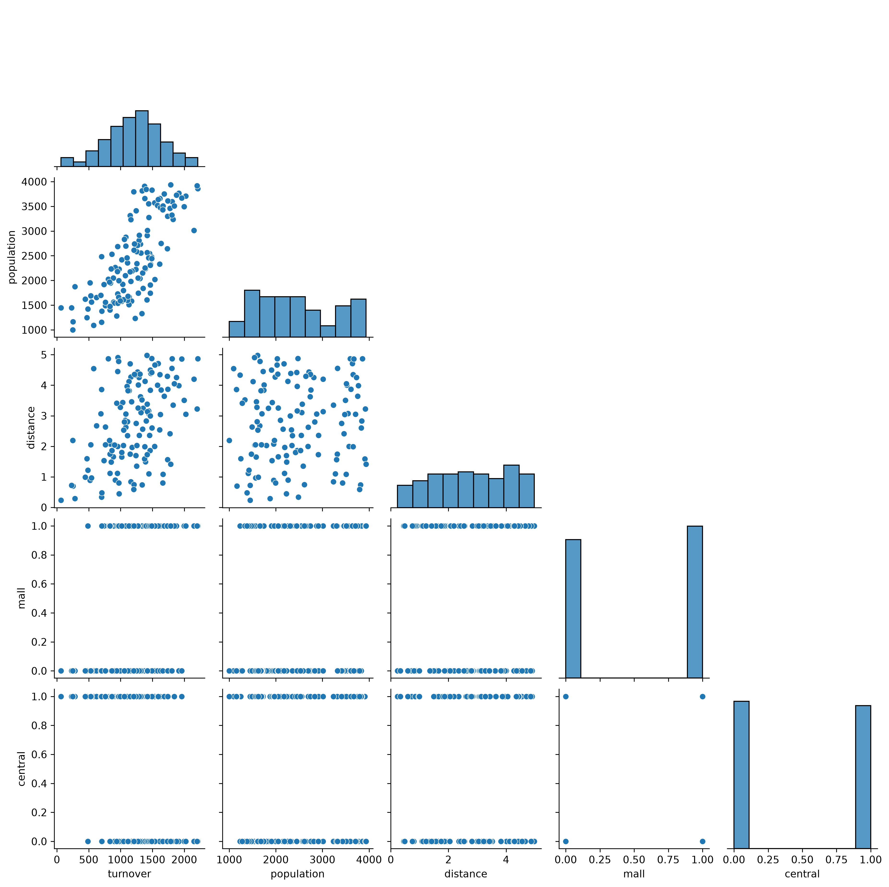
Model 1:
\[ \text{turnover} = \beta_0 + \beta_1 \text{population} + \epsilon \]
Python: Complete TASK 2: Simple linear regression where you fit a linear regression model with population as the only covariate.
Discuss:
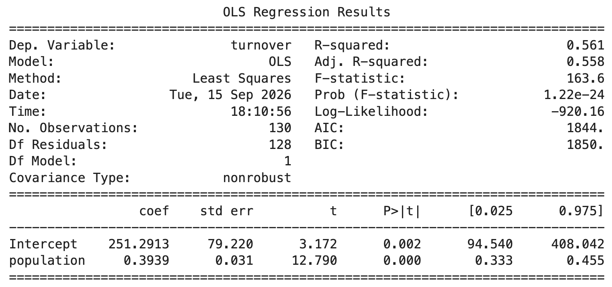
Model 1:
\[ \text{turnover} = \beta_0 + \beta_1 \text{population} + \epsilon \]
Python: Complete TASK 3: Visualize the model, including prediction interval
Discuss: What do you notice by looking at the fitted regression line, the data points and the prediction interval? What is the predicted turnover (with uncertainty) for a new shop built in an area where 2000 people live?
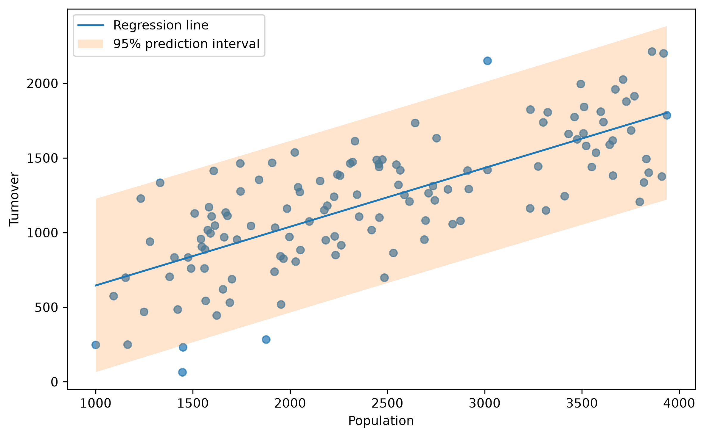
Predicted turnover 2000 people: 1039 [464, 1614]Model 1:
\[ \text{turnover} = \beta_0 + \beta_1 \text{population} + \epsilon \]
Definition: The residuals, in this case, are defined as the observed minus the predicted turnover
Python: Do TASK 4: Residuals where you are given code to compute residuals and standardized residuals, and plotting two common diagnostic plots.
Discuss: What do you remember from a basic statistics course about these plots? What are we looking for?
How are the residuals related to the mathematical model formulation, and how should the residuals behave?
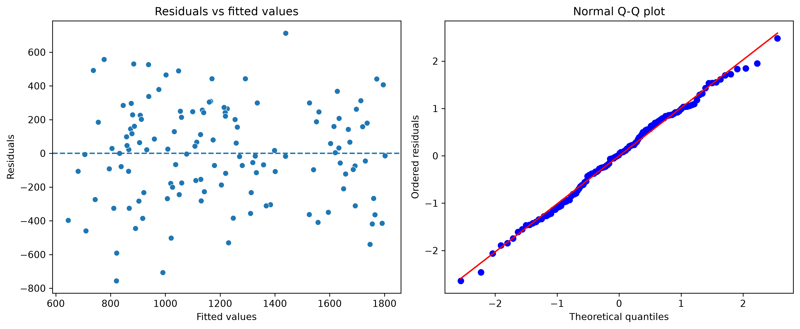
Remember: \(y_i = \beta_0 + \beta_1 x_i + \epsilon_i\) where
The key assumption we check with residuals is:
The errors should behave like (Gaussian) random noise.
A residual plot should therefore show:
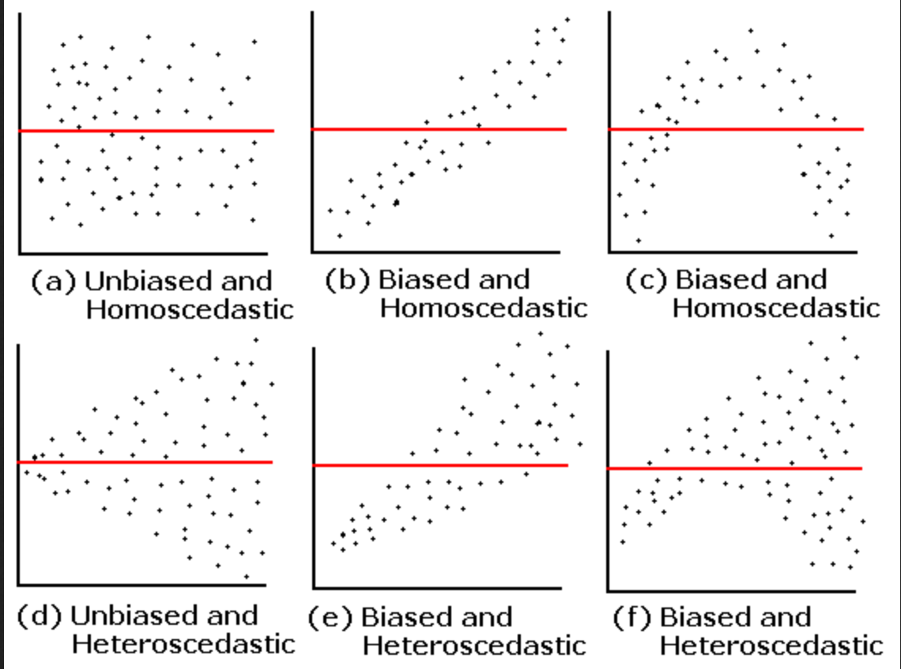
We will now add the distance covariate to the model
Model 2:
\[ \text{turnover} = \beta_0 + \beta_1 \text{population} + \beta_2 \text{distance} + \epsilon \]
Python: Do TASK 5: Extend the model, use AI if needed, to add the extra covariate.
Discuss:
How do you interpret the estimated parameters?
What happened to the parameter for population? Why?
Compare adjusted \(R^2\) between Model 1 and Model 2, do you see an improvement?
Model 1: Only population
Model 2: Population and distance
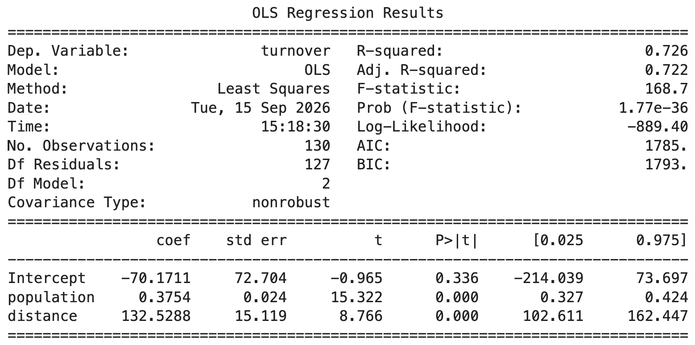
We will now modify how the distance covariate enters the model
Model 3:
\[ \text{turnover} = \beta_0 + \beta_1 \text{population} + \beta_2 \text{log(distance)} + \epsilon \]
Discuss 1: Why would this model make sense? For example, should increasing distance from 1 → 2 km have the same effect as increasing it from 8 → 9 km?
Python: Do TASK 6: Covariate transformation, use AI if needed, to add the log transform of distance as a covariate. Plot the predicted turnover for both models (model 2 and model 3) when the population is 1000 and the distance ranges from 0.1 to 10 km (you can add prediction uncertainties).
Discuss 2: What do you notice from these plots?
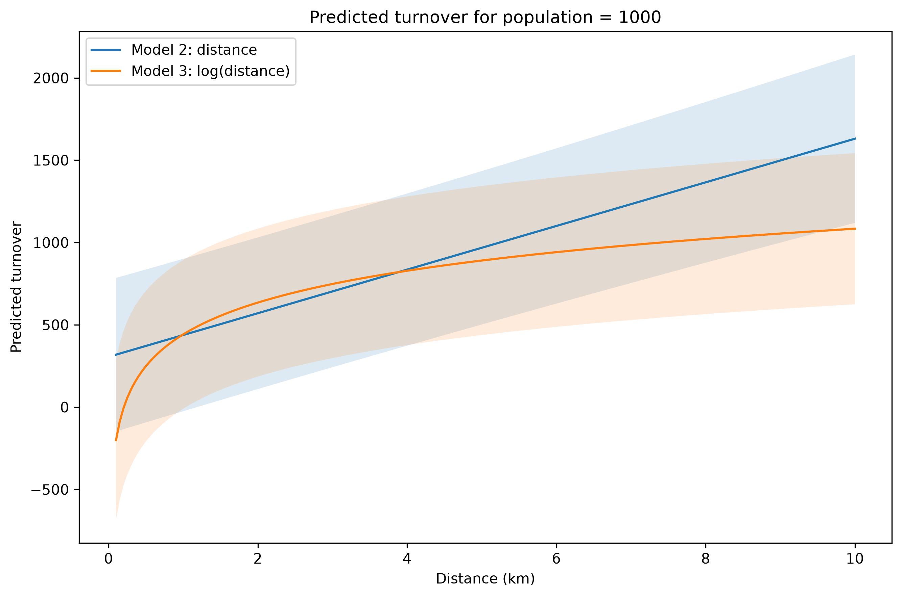
In general, a covariate can enter into our model in many ways using some transformation, i.e:
\[ y_i = \beta_0 + \beta_1 f(x_i) + \epsilon_i \]
This adds a lot of flexibility to the model.
We now want to check weather being in a mall or being in the city center has also an effect on the turnover.
Model 4:
\[ \text{turnover} = \beta_0 + \beta_1 \text{population} + \beta_2 \text{log(distance)} + \beta_3 \text{mall} + \beta_4 \text{center} + \epsilon \]
Python: Do TASK 7: Add categorical covariates, use AI if needed.
Discuss: How do you interpret the new parameters?
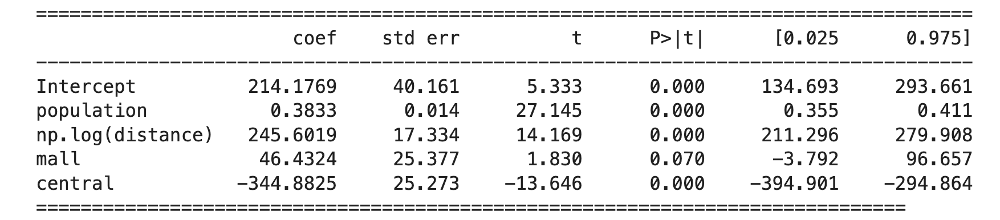
If the store is in a mall it will, all other variable being equal, earn ca 46 000 NOK more per week compared to one that is not in a mall. This effect does not seem to be significant.
Holding population, distance and mall status constant, the model predicts that city-centre stores have approximately 345 000 NOK lower weekly turnover than stores outside the city centre.
Because mall and central are coded 0/1, the model compares:
The coefficients for mall and central describe the difference relative to the 0 category (in this case “not in the mall” and “not in the center”), while keeping population and distance fixed.
The same principle applies for variables with multiple categories, one category is the reference, the effects are differences from the reference category.
Model 4:
\[ \text{turnover} = \beta_0 + \beta_1 \text{population} + \beta_2 \text{log(distance)} + \beta_3 \text{mall} + \beta_4 \text{center} + \epsilon \]
Python: Continue on TASK 7: Add categorical covariates, use AI if needed.
Discuss: What is the difference between these two types of intervals? Why is the prediction interval so wide?
Predictions:
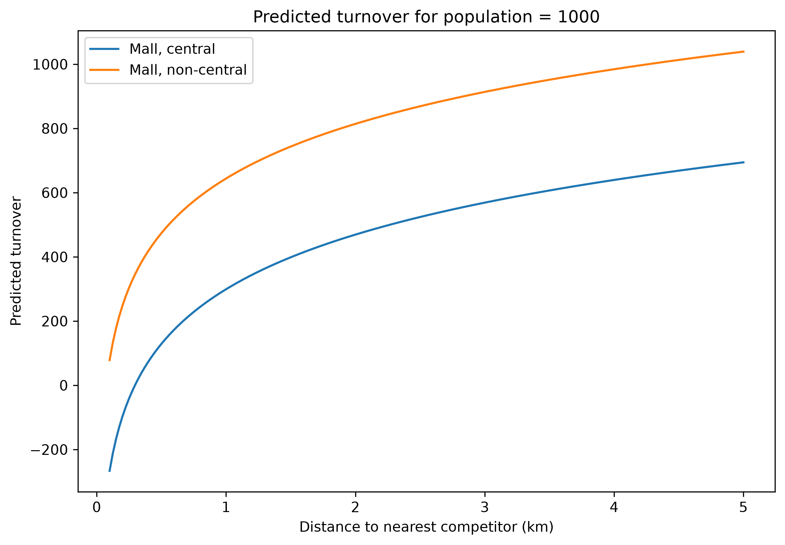
Confidence intervals:
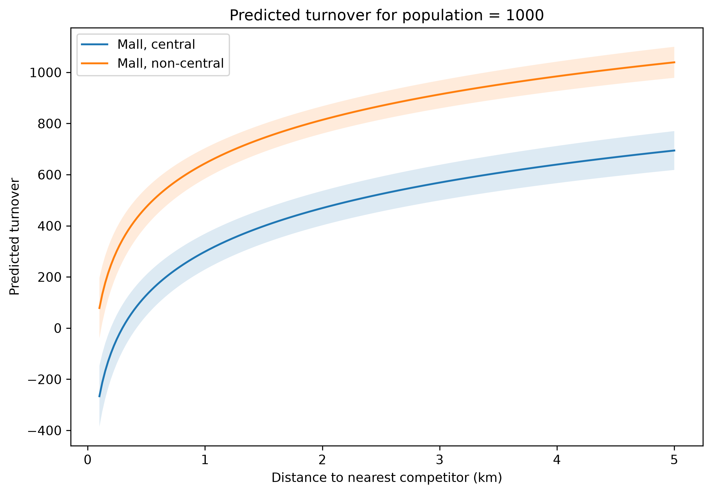
Prediction intervals:
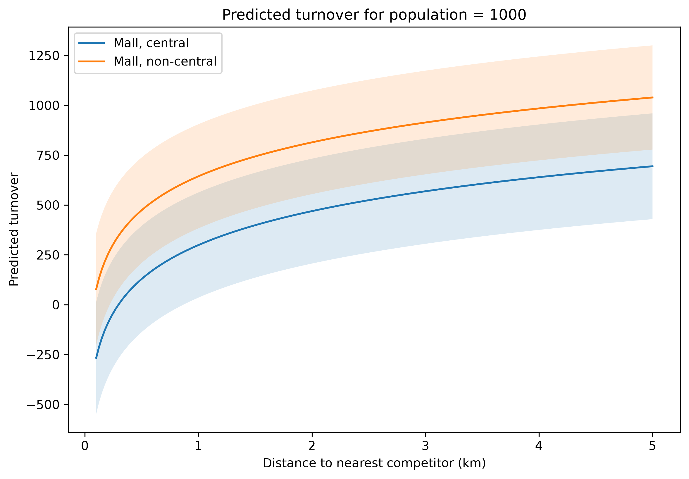
What happens if a shop is in a mall and in the city center?
Model 5:
\[ \text{turnover} = \beta_0 + \beta_1 \text{population} + \beta_2 \text{log(distance)} \]
\[ + \beta_3 \text{mall} + \beta_4 \text{center} + \beta_5 \text{mall} \cdot \text{center} + \epsilon \]
Python: Do TASK 8: Add interaction, use AI if needed, to fit a model where mall and central interact with each other.
Discuss: If population and distance are the same;
What is the adjusted \(R^2\) for this final model?
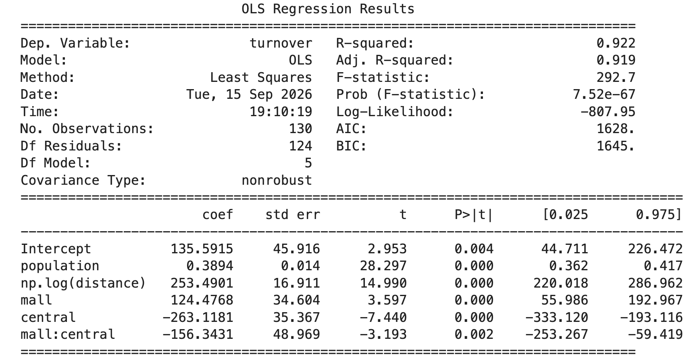
In city centre: approx 32 000 NOK higher turnover if in a mall
Outside city centre: approx 124 000 NOK higher turnover if in a mall
You are building a new store and have two locations to consider. Both are outside of a city center and have about 2500 inhabitants within the nearest 1 km.
The first location has a distance of 2 km to the nearest competitor, and is not within a mall. The second location is only 0.5 km from the nearest competitor, but is within a mall.
What is predicted turnover at the two locations? Calculate 95% prediction intervals. Is it clear, from the model, which location you should prefer?
Use our final model with interactions to evaluate this.
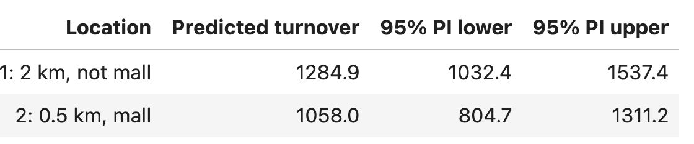